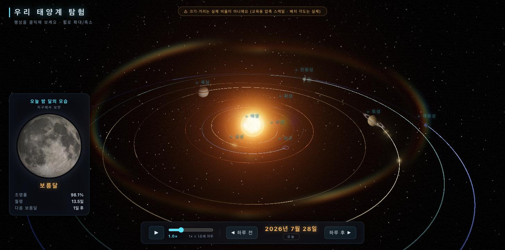
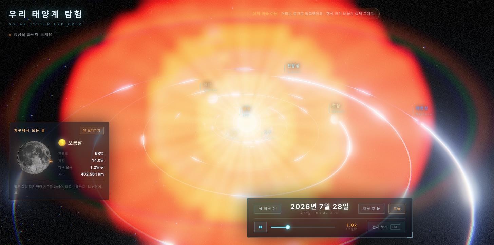

실측 리포트 · 2026-07
AI 4개에게
똑같은 앱을 만들라고 했습니다
- Opus 5
- Fable 5
- GPT-5.6 Sol
- Grok 4.5
무엇을 만들게 했나
웹에서 도는 3D 태양계

어린이 교육용 · 브라우저에서 실행- 오늘 날짜의 진짜 별 위치
- 하루씩 넘기기
- 지구에서 보는 달 모양
이상한 점
그런데 자동 시험은 전부 만점이었습니다
공정하게 겨루려면
조건을 똑같이 맞췄습니다
- 한 번에 하나씩 실행
- 내 개인 설정 끄기
- 성능 설정 최고로 통일
- 각자 빈 폴더에서 시작
채점 기준
"그럴듯해 보인다"는
점수가 아닙니다
- 보름달 주기 29.53일
- 지구가 하루에 도는 각도
- 행성 8개 공전 주기
결과 · 시간
얼마나 걸렸나
grok-4.510.3분
gpt-5.6-sol26.8분
claude-fable-532.9분
opus-5 (2회차)35.7분
opus-5 (1회차)120.0분
숫자를 의심해야 할 때
120분은 서버 장애였습니다
6번서버 과부하 응답
8번다시 시도
35.7분나중에 재실행
결과 · 사용량
숫자가 커 보이는 건
같은 걸 다시 읽어서입니다
grok-4.512.7%
gpt-5.6-sol5.6%
opus-5 (2회차)5.4%
claude-fable-54.0%
opus-5 (1회차)1.9%
결과 · 사용량
새로 처리한 양으로 보면
grok-4.513만
gpt-5.6-sol26만
claude-fable-530만
opus-5 (2회차)37만
opus-5 (1회차)61만
31배 차이전체로 보면
4.6배 차이새로 처리한 양
결과 · 종합
여기까지 성적표
| 모델 | 시간 | 새로 처리 | 비용 | 자동 시험 |
|---|
| grok-4.5 | 10.3분 | 13만 | $0.73 | 만점 |
| gpt-5.6-sol | 26.8분 | 26만 | $5.00 | 만점 |
| claude-fable-5 | 32.9분 | 30만 | $17.18 | 만점 |
| opus-5 (2회차) | 35.7분 | 37만 | $9.56 | 만점 |
| opus-5 (1회차) | 120.0분 | 61만 | $25.52 | 만점 |
비용에 대해
이 비용은 실제로 낸 돈이 아닙니다
- 전부 구독 계정으로 실행
- 실제 추가 결제 0원
- 종량제로 썼다면 나왔을 값
그런데
브라우저로 직접 열어봤습니다
빌드가 됐다는 건 화면에 잘 나온다는 뜻이 아닙니다.
제대로 나온 것
둘이었습니다
 GPT-5.6 Sol달 옆에 '태양 방향' 화살표까지Claude Fable 5다섯 중 화면이 가장 좋음
GPT-5.6 Sol달 옆에 '태양 방향' 화살표까지Claude Fable 5다섯 중 화면이 가장 좋음깨진 것 · Opus 5
같은 모델이 두 번, 다른 방식으로
 1회차 — 행성이 사라짐창 높이에 따라. 오류 메시지도 없음
1회차 — 행성이 사라짐창 높이에 따라. 오류 메시지도 없음
2회차 — 태양 빛이 화면을 덮음창 크기와 상관없이 깨짐깨진 것 · Grok 4.5
하지 말라고 적어둔 실수였습니다
"이렇게 하면 화면 전체에 빛 번짐이 도배됩니다" — 제가 준 주문서에 적힌 문장
 Grok 4.5빛 번짐이 화면을 덮어 태양계가 거의 안 보임
Grok 4.5빛 번짐이 화면을 덮어 태양계가 거의 안 보임정리
시험은 전부 통과,
화면은 둘만 성공
| 무엇을 확인했나 | 결과 |
|---|
| 코드가 빌드되는가 | 5개 전부 통과 |
| 계산이 맞는가 | 5개 전부 통과 |
| 서버가 응답하는가 | 5개 전부 통과 |
| 화면이 제대로 나오는가 | 2개만 · 자동 확인 불가 |
정리
가져갈 것 세 가지
- 화면은 눈으로 봐야 한다
- 창 크기를 두 개 이상
- 전체 사용량은 순위가 아니다
한계
각 모델을 한 번씩만 돌렸습니다
- 과제 1개
- 모델당 1회 (Opus만 2회)
- 창 크기 2개만 확인